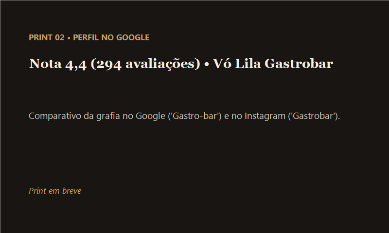
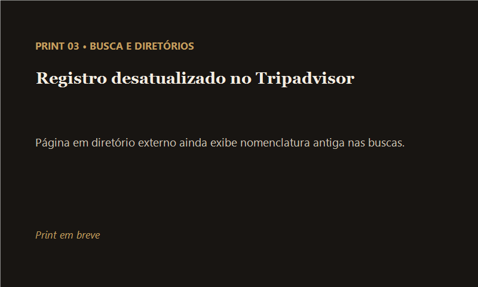

1. Buscar no Google
O cliente encontra uma excelente avaliação no Google (4,4 ★ com 294 avaliações), mas vê o nome com hífen ("Vó Lila Gastro-bar") e, logo abaixo nas buscas, uma página no Tripadvisor ainda com o nome antigo da casa.

Print em breve Ampliar printPerfil no Google: excelente reputação (4,4 ★), com grafia "Gastro-bar".

Print em breve Ampliar printTripadvisor: página ainda exibe o nome antigo "Cafe Gourmet".